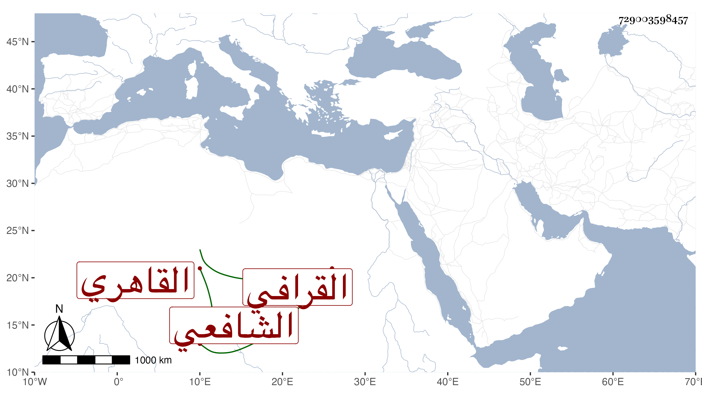

0902Sakhawi.DawLamic.ITO20230111-ara1.EIS1600.729003598457
Biography ID: 729003598457
113
أحمد بن علي بن محمد الشهاب القرافي ثم القاهري الشافعي ويعرف بالشاب التائب . كان أديبا فاضلا مطارحا جيد الخط ممن أخذ عن ابن الهمام وله فيه قصيدة حسنة ، وعن الشمني والحصني ومما أخذه عنه المطول وغيرهم وله مجموع مفيد وأقرأ التوضيح لابن هشام . لقيته وكتبت عنه قوله فيمن اسمها شقراء :
| سبقت لميدان الفؤاد بحبها | شقراء تجذب مهجتي بعنان |
| فتراكبت حمر الدموع شبهها | مذ جالت الشقراء في الميدان |
وكتبت عنه غير ذلك . وممن تطارح معه الشهاب المنصوري وبلغني عن ابن بردبك دعواه فيه التفرد بمجموعه . مات في يوم الثلاثاء خامس شعبان سنة إحدى وستين . وهو غير الشهاب أحمد الشافعي المعروف أيضا بالشاب التائب فذاك اسم أبيه عمر بن أحمد بن عبد الله وسيأتي .
